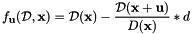
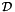
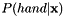

|
Padenti
0.2
An OpenCL-accelerated Random Forests implementation for Computer Vision applications using local features
|
|
Padenti
0.2
An OpenCL-accelerated Random Forests implementation for Computer Vision applications using local features
|
In this brief step-by-step tutorial we will explain how to use the Padenti library to implement a naive hand segmenter.
The input data consists in the depthmaps stream captured by a RGB-D camera. A depthmap is a two dimensional image where pixel data represents the distance (usually in mm) from the camera sensor at that specific pixel location. In this tutorial we are going to use the NYU Hand pose dataset and, more specifically, its subset provided for hand segmentation. The dataset can be downloaded at the following link (mirror).
Before being used, the dataset must converted in a format compatible with the Padenti library. For this purpose, we can use the process_dataset.py python script shipped with the library (it can be found in the script subfolder). Once the dataset has been downloaded and extracted, we can excute the script as follows
where DATASET_PATH is the directory containing the original dataset images, while OUT_PATH is the processed dataset destination path. After the script execution ends, OUT_PATH contains two folders (train and test) where the processed images of the training set and the test set are stored.
For each image of the original dataset, two new images are generated: a 16bit single channel image <IMAGE>_depth.png containing the depth values, and a RGB image representing the depthmap labelling. Labels mark the depthmap pixels as hand (red color) or background (blue colors). Pixels that must not be processed (in this case, pixels whose depth values is greater than 2m) are labeles with black. A labels image example is shown below

Features are at the heart of the learning problem. In the case of the Padenti library, we tackle computer vision problems where features are defined locally on a per-pixel basis. This means that features are rather simple and usally work on the value stored at the current pixels (or at a subset of neighbouring pixels).
To generalize with respect to arbitrary features, Padenti provides to the user some facilities to define custom features. We define a standard OpenCL C function prototype that must be implemented within a feature.cl file and passed to the library. The function prototype is the following
image can be a bidimensional image2d_t object with up to 4 channels or an image3d_t object with single-value channels and an arbitrary number of layers. nChannels, width and height specify the number of channels (or layers for 3D images) and the width and height of each image channel (or layer). coords stores the 2D coordinates of the currently processed pixel. treeLeftChildren and treePosteriors are the values of the left children index and per-class posterior probabilities for all the nodes of the currently used tree, stored consecutively in a breadth-first fashion (i.e. sorted by node index). Finally, the features pointer stores the features values, while featDim indicates the feature dimension (i.e. number of entries in the feature vector).
Returning to the original problem, previous works in the computer vision field proposed different features for body-parts segmentation, some of which can be applied to hand segmentation as well. Here we consider a simplified version of the features applied in this work and defined as

where  is the depthmap image,  are the current pixel coordinates,
are the current pixel coordinates,  is an offset vector and
is an offset vector and  is a reference depth value. This feature returns strong a response in the presence of depth discontinuities. Combined with the Random Forests framework, the feature is able to discrimate with success among body parts. In this tutorial we will use the same feature to discrimante between hand pixels and background pixels.
is a reference depth value. This feature returns strong a response in the presence of depth discontinuities. Combined with the Random Forests framework, the feature is able to discrimate with success among body parts. In this tutorial we will use the same feature to discrimante between hand pixels and background pixels.
The OpenCL C feature implementaion using the above feature is shown below:
Please look at the comments for futher details about features implementation.
The test_tree_trainer.cpp file in the test subfolder provides the code for training a single Random Forest tree. In this section we will walk through the basic classes that the Padenti library makes available to load a training set and train multiple trees of a random forests ensemble.
The Padenti library uses C++ templates to generalize the Random Forests implementation with respect to both input images type (pixel type and number of channels) and features type (number and type of entries). Here we consider single channel 16bit depthmaps. We thus start with the definition of the classes responsible of training set loading
The CVImageLoader is a generic class responsible of loading an image from disk. We are going to use this class to load deapthmaps, so we specialize the template to work with single channel images with unsigned short values. The CVRGBLabelsLoader class is similar to the CVImageLoader, but it works specifically with RGB images, so we do not need template specialization. The class will be used class to read labels images from disk. Finally, both the class for depthmaps sampling (UniformImageSampler) and training set handling (TrainingSet) must be specialized with the depthmaps pixel type and number of channels.
Templates are also used to generalize the Random Forests implementation with respect to feature type and size. Since the feature is defined by the 2D offset with respect to current pixel location , we represent it as a 2D short int vector and declare the template specialization for the tree and trainer classes as follows
the names of classes are self explanatory (please refer to the documentation for additional details).
Once the templates specialization has been defined, we can instantiate the corresponding classes.
depthmapLoader and labelsLoader are responsible of depthmap/labels loading. The latter requires a Nx3 matrix specifying the RGB values associated to each class label (defined by the RGB2LABEL matrix in the code above). sampler executes the depthmap sampling and, for each depthmap, extracts up to N_SAMPLES. trainingSet loads the training set depthmap/labels pairs stored in the path specified by trainingSetPath and employs the depthmapLoader/labelsLoader for images pairs loading and sampler for sampling.
Next, we create a TreeT object tree, identified univocally by the treeID index and with depth TREE_DEPTH. The trainer object is responsible of training the TreeT object on the loaded training set. The first parameter specifies the directory where the previously defined file feature.cl containing the feature implementation is stored.
Before launching the training, we must specify the training parameters. Here we suppose that we extract 2000 pixels at each pixel and test 20 thresholds for each feature. We bound the features offset within the range ]0,60[ and the tresholds within ]-200,200[. Finally, we stop the training of a node if less than 300 pixels reach that node. We can specify these parameters filling the corresponding fields of a TreeTrainerParametersT structure
We can now launch the training
Once the training ends, we can save the tree to disk using the tree save method
After one or more tree has been trained, we can use the Padenti library to predict which pixels belong to the hand for an unseen input depthmap. Similarly to the previous section, we will go through the steps needed for loading a trained forest and performing hand segmentation using the Padenti library. The output of the test is a two layers float image where the first layer stores the probability  for each pixel , i.e. the predicted probability for that pixel of being a hand pixel, whereas the second layers stores the  posterior probability (i.e. the probability of being a background pixel).
posterior probability (i.e. the probability of being a background pixel).
We start by specializing the template classes needed for tree/depthmap loading and classification
The Image class defines a generic container for image pixels, while the CLClassifier implement the Random Forests classification. We can now load the trees from disk and pass them to the classifier object
As in the training case, the classifier needs the path of the directory where the feature implementation is stored. Random Forests trees can be easily loaded into the classifier using the left shift operator.
We can now load the input depthmap. Since not all depthmpap pixels need to be processed, we use the OpenCV library to create a binary mask where only pixels whose depth value is different from zeros are selected
Once the depthmap and mask objects have been initialized, we can perform prediction
The prediction image will contain the classification result. Using the OpenCV library we can wrap each layer into a 2D float image and show it
A prediction result example is shown below

While the per-pixel segmentation is still not perfect, it provides a strong signal that can be used as the input of another algorithm (i.e. camshift) to easily track the hand position within the image.
 1.8.6
1.8.6